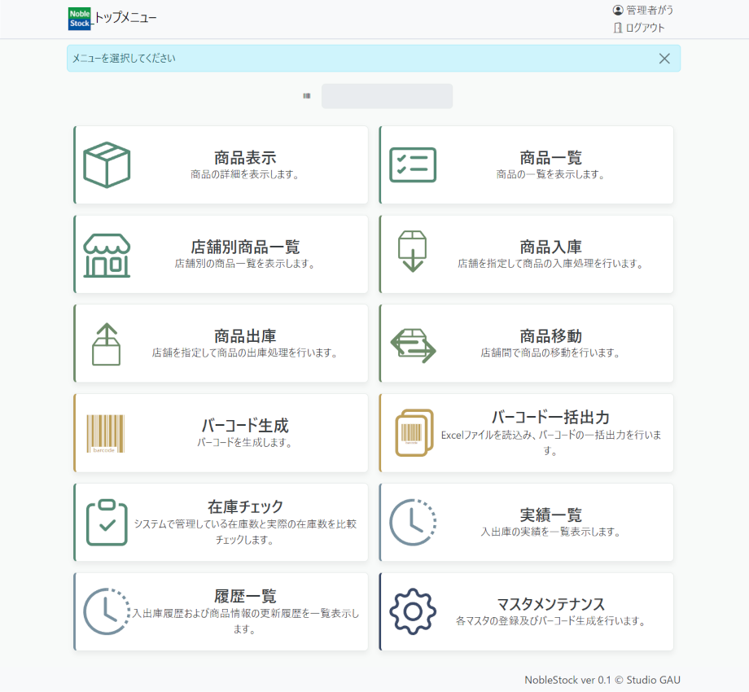
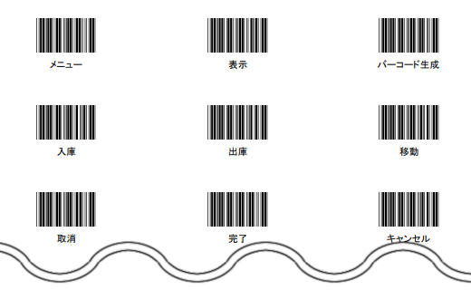
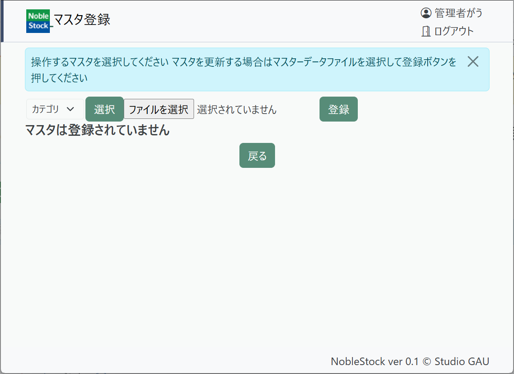
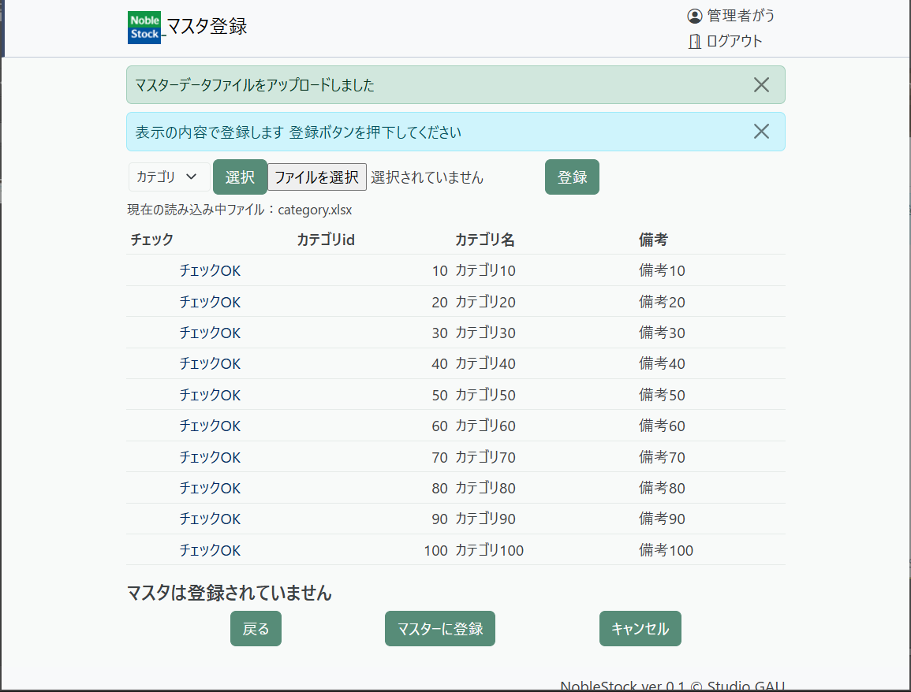
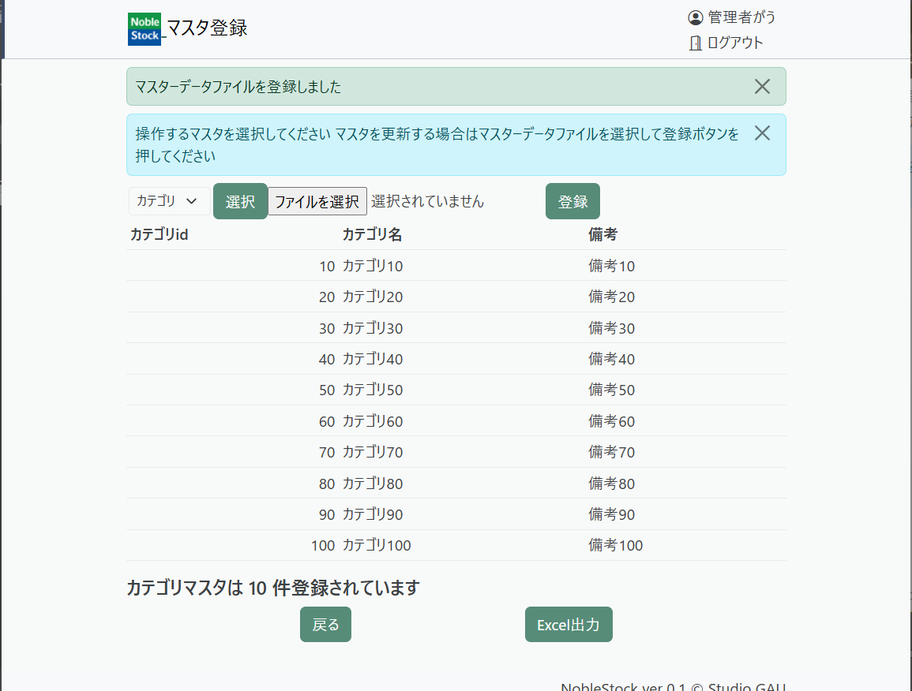
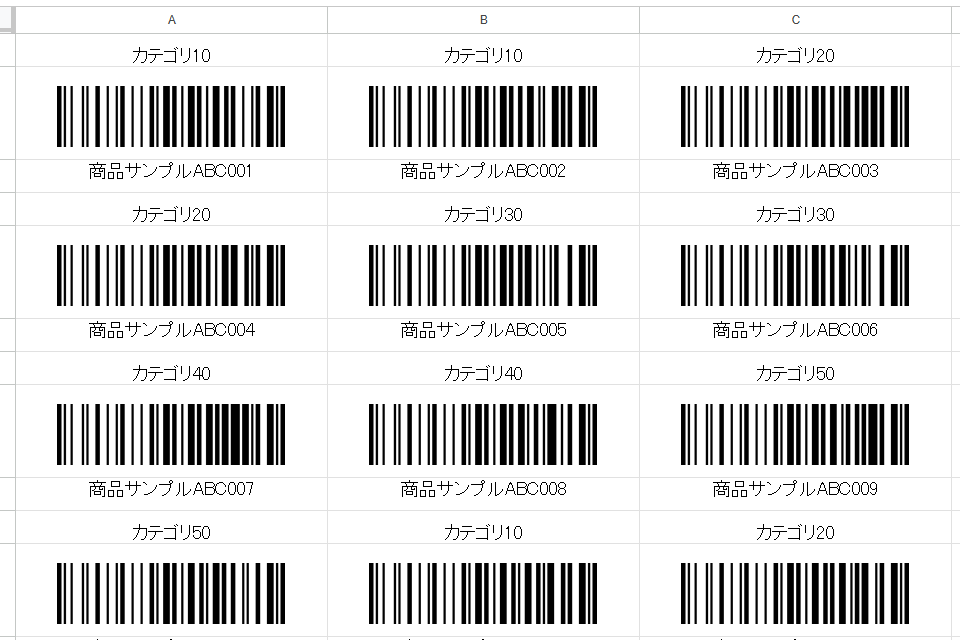
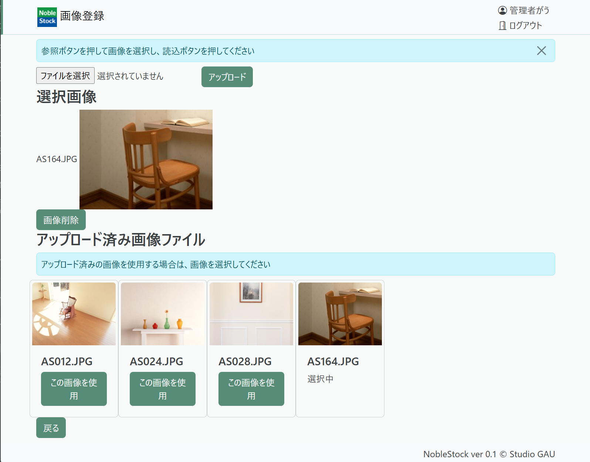
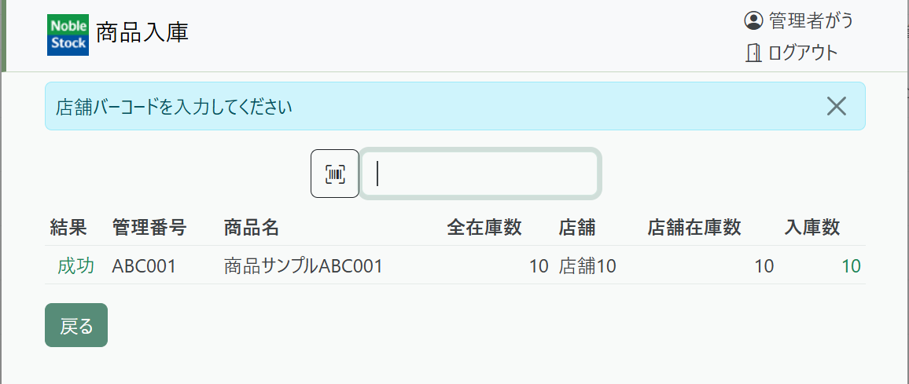
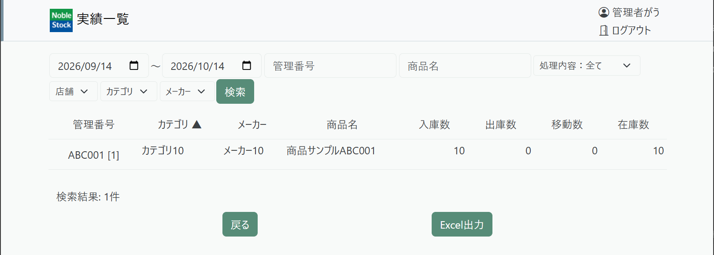

NobleStockの特徴
Noblestockは、商品情報と店舗ごとの在庫を管理するWebアプリです。商品の登録、入出庫・店舗間の移動をバーコードで記録、操作できます。棚卸の在庫チェックや、Excelによる一括登録・出力にも対応しています。主な画面の役割を紹介します。
アプリ本体はGitHubのlearnchi/noblestockから取得してください。導入方法はNobleStockのドキュメント Windowsでの導入手順を参照してください。
ログインすると、トップメニューが表示されます。
次の画像は、権限が最大のユーザーでの表示です。

【バーコードポイント】 マスターメンテナンスからマスタ登録画面に移動し、ドロップダウンリストに「メニュー」が表示されている状態で「バーコード出力」ボタンを押すと、メニュー操作がバーコードリーダーから可能になるバーコードがExcelファイル形式で出力されます。バーコードリーダーを端末に接続することで、倉庫や店舗などで素早く操作できるようになります。

マスタ情報の登録
導入手順を終えた状態では、商品情報や在庫ばかりでなく、店舗情報、メーカー、単位といったマスター情報も登録されていません。これらは業務に適した情報を精査し、NoblesStock利用開始前に「マスタメンテナンス」画面から登録します。
マスタメンテナンスからマスタ登録画面を表示し、「カテゴリ」「メーカー」「単位」「店舗」マスターを順に登録します。
ドロップダウンリストから「カテゴリ」を選択し、「選択」ボタンを押すと、ファイルアップロードが促されます。

カテゴリ情報を記入したExcelファイルを登録することができます。見本がnoblestock\doc\お試し用Excel\category.xlsxにありますので、これを選択し、「登録」ボタンを押すと、Excelファイルの内容を表示し、登録かのうかどうかチェックします。

確認したら、「マスターに登録」ボタンを押して登録してください。

「メーカー」「単位」「店舗」マスターを、同様に登録します。
商品情報の登録
商品一覧から「登録」ボタンを押して商品登録画面に移動し、商品を1つ1つ登録するか、マスタメンテナンスから商品一括登録でExcelを読み込んで一括登録します。
商品一括登録画面では、ファイル選択で商品情報の一覧を読み込みます。見本がnoblestock\doc\お試し用Excel\product.xlsxにありますので、選択して読み込みボタンを押します。登録後、商品一覧画面を表示すると、商品が登録されていることを確認できます。
【バーコードポイント】 バーコード生成、商品一覧のバーコード出力で、商品のバーコードラベルを印刷することができます。印刷したバーコードを商品に貼付することで、在庫管理をバーコードリーダーで行うことができるようになります。
商品一覧画面から、「全選択」ボタンを押して選択後、「バーコード出力」ボタンを押して「バーコード選択出力」画面を表示後、個数を確認して「リスト出力」ボタンを押すと、バーコードが並んだExcelファイルが出力されます。

商品画像の登録
1商品につき画像を1点登録できます。商品登録画面、更新画面で画像をアップロードできるほか、画像をまとめて登録後、商品に関連付けることも可能です。マスタメンテナンスから「画像一括登録」画面で、複数の画像ファイルを一度にアップロードすることが可能です。
商品登録/更新画面から画像登録画面に移動できます。ここには既に登録した画像が表示され、画像のアップロードも可能です。また、「この画像を使用」ボタンを押すことで、商品に関連付けることができます。画像を削除する場合は、現状、画像を選択後にのみ可能です。

「戻る」ボタンで商品登録/更新画面に戻ったら、登録/更新処理をしてください。
商品の入出庫、店舗間移動
商品情報を登録しただけでは在庫がゼロです。商品の入出庫、店舗間移動を実際に試して、在庫状況を確認します。
【バーコードポイント】 入出庫と移動は、バーコード入力による操作が便利です。メニュー操作のバーコードをマスタメンテナンスから出力し、バーコードリーダーから読み取ることで、素早く操作できるようになります。
商品入庫
商品入庫画面は、以下の入力順に入力します。
① 店舗バーコードの入力
店舗バーコードは、店舗であることを示すキーワード"PLP"に続けて店舗IDを繋げます。
例：PLP10
② 商品コードの入力
管理番号を入力します。
例：ABC001
③ 入庫数の入力
取消 PCPO または
個数 "PVP"+ 個数を1桁ずつ
例：10個の場合はPVP1とPVP0を順に入力します。
④ 完了コードの入力
完了 PCPP
キャンセル PCPN
店舗10（PLP10）に 商品サンプルABC001（ABC001） を10個（PVP1 PVP0）個入庫した結果が以下の通りです。

商品一覧や店舗別商品一覧で、在庫数を確認できます。実績一覧や履歴一覧にも捜査結果が記録されます。

商品出庫
商品出庫でも、入庫と同様に店舗と商品、数量を入力することで、在庫数を減らすことができます。出庫数が在庫を上回る場合は、在庫が足りない旨のエラーとなります。
商品移動
店舗間で商品を移動する場合に行う操作です。
① 店舗バーコード（From）の入力
移動元の店舗情報を入力します。
例：PLP10
② 店舗バーコード（To）の入力
移動先の店舗情報を入力します。
例：PLP20
③ 商品コードの入力
管理番号を入力します。
例：ABC001
④ 入庫数の入力
取消 PCPO または
個数 "PVP"+ 個数を1桁ずつ
例：PVP5（5個）
⑤ 完了コードの入力
完了 PCPP
キャンセル PCPN
ユーザーと権限の管理
マスタメンテナンスのユーザー管理では、ログインユーザーの登録や更新を行います。Noblestockでは、権限管理を画面ごとに管理しています。対象ユーザーが操作可能な画面をチェックすることで、権限を付与します。